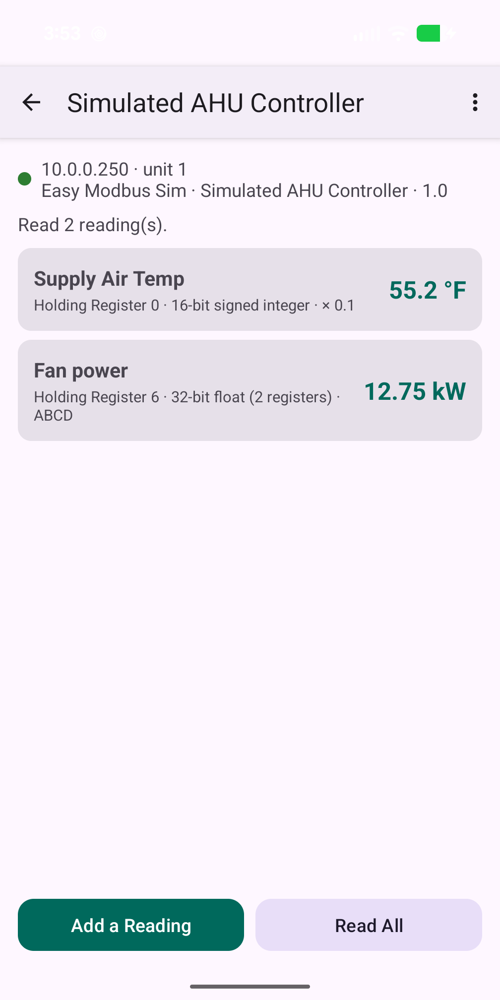
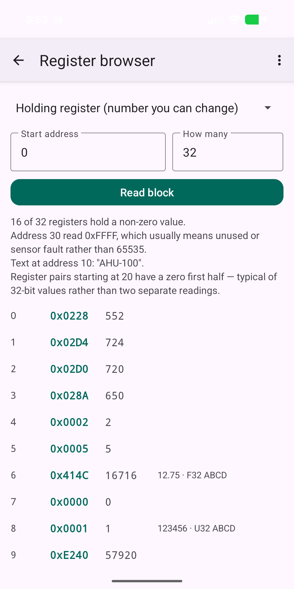
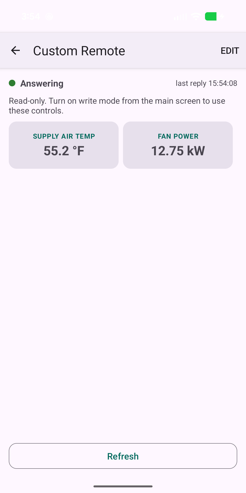

01 / FIND
Finds equipment
Sweeps the local network for anything answering Modbus, because Modbus has no discovery of its own — or add a device by typing its address.
Modbus TCP / RTU · Android
Easy Modbus is a free Android app for facility managers, building engineers and controls technicians. It finds Modbus TCP equipment on a network, helps you work out what its registers actually mean, remembers that so nobody has to work it out twice, and exports the result as a CSV you can hand to anybody.
No account, no server. Easy. Everything happens on your phone and your local network.

Sweeps the local network for anything answering Modbus, because Modbus has no discovery of its own — or add a device by typing its address.
Easy mode picks the settings for the reading you want; Pro mode exposes raw hex, word order, function codes and the frame log. Ranked interpretations, with the reasoning, so a wrong guess is visibly wrong.
Name a reading once and its address, data type, word order, scaling and units are saved for next time — nobody works it out twice.
Paste a vendor's CSV register map instead of retyping forty rows, and export the whole thing with live values to hand to anybody.
Off by default and off again every launch, confirmed against a summary, bounded by limits you set, read back afterwards, with a Put It Back action that restores what the register said when you arrived.
Build a drag-and-drop panel of readouts, setpoints and switches for one device, sized for a gloved finger — the handful of registers you actually use, one tap away.



If Modbus is new to you, read what is Modbus? first. It explains the one thing that causes most of the difficulty: a Modbus device will happily tell you the contents of slot number 7, and will never tell you what slot 7 is.